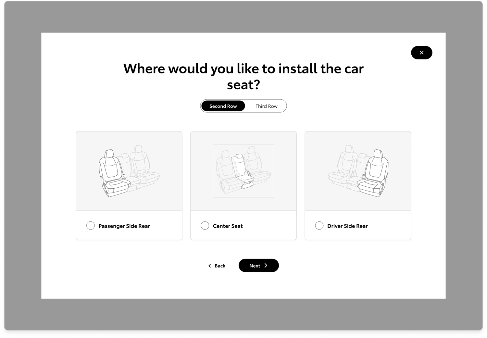

Toyota Safety Hub
I designed Toyota Safety Hub, a dual-mode destination that unified Toyota's fragmented safety content for shoppers and owners — growing monthly views from 18K to 50K+, a 178% lift.
Role
Product Designer
Client
Toyota
Agency
Saatchi & Saatchi LA
Shipped
July 2023
Context
Toyota's safety technology is industry-leading. It spans Toyota Safety Sense, Toyota For Families, and award-winning crash test performance. But when users actually arrived on toyota.com to learn about it, the story fell apart. Safety content was scattered across disconnected pages, each touting different features in different ways, and no single page could answer the questions either shoppers or owners arrived with.
Safety content was scattered
Commitments to safety lived across multiple areas of the site, each surfacing different features with no unifying narrative.
No depth for shoppers
Toyota shoppers researching a purchase couldn't find the educational content needed to make an informed decision.
No specificity for owners
Owners had no way to discover which safety features were actually equipped on their vehicle, or how to use them.
A study of 221 Toyota.com visitors confirmed what the audit surfaced:
74% couldn't fully accomplish their goal during their visit.
48% rated the existing experience “very difficult.”
43% said the whole thing took too much time.
Problem
The safety section wasn't just underperforming. It was actively failing the people it was supposed to serve. As I dug deeper, the reason became clear: the existing experience had been built for no one in particular.
Two completely different users were showing up with completely different goals. Toyota shoppers were researching a future purchase, arriving logged out and looking for clarity and credibility on how Toyota's safety technology compared. Toyota owners already had a Toyota in their garage and wanted specific answers about the features on their specific vehicle. Serving both without compromising either became the central design challenge.
Final designs
For the shopper, we built a logged-out experience that provides a clear, structured overview of Toyota Safety Sense systems through an opt-in depth model, giving users access to the information they need without forcing them to consume all of it. Interactive components and direct messaging about Toyota's safety features give shoppers what they came for: enough context to make a confident and informed decision.
For the owner, we built a logged-in experience personalized to the specific vehicle they own, leading with the Toyota Safety Sense system equipped on their car alongside tailored safety content relevant to their model. For older vehicles without a Toyota Safety Sense system, we surfaced an agnostic view of standard safety features so that no owner ever arrived at a dead end, regardless of what they drove.
![Logged-out Safety Hub for shoppers — header with Toyota nav and a Safety Hub family hero, a Toyota Safety Sense overhead-view introduction with feature list (Pre-Collision, Lane Tracing, Dynamic Radar Cruise Control, Lane Departure Alert, Automatic High Beams, Proactive Driving Assist), an Additional Features Safety & Convenience hub frame with a silver Prius, a Safety Connect card, a Safety Education section with Helping Families, Helping new drivers, and Reinforcing safety for all sub-sections, an Award Winning Safety strip, and How-To Videos / Safety Recalls / ToyotaCare cards.](../assets/images/toyota-safety-hub-logged-out.png)




Outcome
Toyota Safety Hub launched July 2023 and became the primary safety destination on toyota.com, growing from 18K to over 50K+ monthly views, a 178% increase. By consolidating fragmented content into a single personalized experience built around two clearly defined user types, the redesign gave both shoppers and owners something they had never had before: a place on toyota.com that actually answered their questions on everything safety related.
50K+
Monthly views, up from 18K
+178%
Lift in traffic to Toyota's primary safety destination